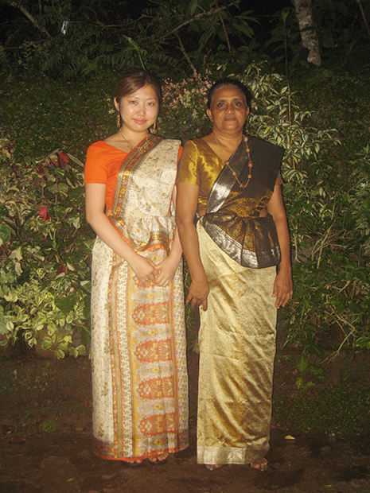
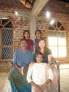
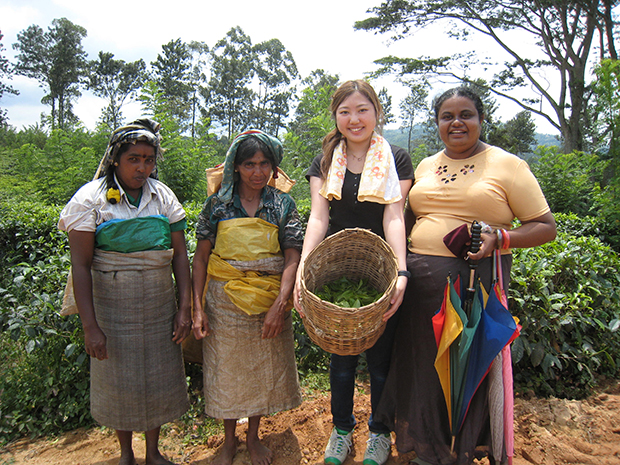
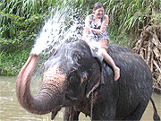

発展途上国で、ホームステイも、英語も、ボランティアもできる。 このような充実しているプログラムは他になかったので、参加を決めました。
英語のレッスンは、主にディスカッション形式で行いました。そこでは、法、政治、経済、教育等の諸制度についてお互いの国の制度を説明しあい、問題点を挙げ、解決法を議論しました。
トピックは多岐にわたり、この他にも宗教、歴史、地理、慣習、民族対立など、たくさん話し合うことができました。
これにより、英語力が伸びたことはもちろん、スリランカ及び日本についての理解を深めることが出来ました。
私の場合、幸運にもamma（アンマ=>ホストマザー）が担当教師でしたので、レッスン以外の時間も常に疑問があればいつでも解決できたところが良かったです。
買い物中でも、キッチンでも、ディスカッションの続きをすることがよくありました。
ホームステイは、ドアや窓が全開の開放的な空間の中、自然と共存する暮らしを体験できて良かったです。 食事も、おいしすぎて飽きる気配が全くありませんでした（笑）。
ホストファミリーのammaもpapaも私を本当の娘のように可愛がって下さり、本当に嬉しかったです。
特に、ammaとは、24h行動を共にしているような状態でしたので、お互いのことや私がスリランカで毎日感じたことなど、これ以上話すことは無いというくらいたくさんたくさん話しました。
毎朝ammaと一緒に、庭のウッドチェアーに座ってリスや鳥を見ながらミルクティーを飲んだことは本当に素敵な思い出です。
低開発村では、スリランカの人々のホスピタリティーを強く実感しました。突然の訪問にも関わらず、どこのご家庭でも笑顔で温かくもてなして下さり感激しました。人と人ってこうして繋がっていくのだなと思いました。
スリランカに行く前は、スリランカと日本は全く違う国だと思っていました。しかし、実際行ってみると、文化や生活、社会問題において、予想外に共通点がたくさんあることに気付きました。
例えば、 （1）シンハラ語と日本語（SOVの語順、文末に「ね」をおいて強調を表すetc.） （2）サリーと着物（洋服と違ってどちらも平らにしまえる、縦ラインを重視するetc.） （3）都市部の暮らし（コロンボなどでは日本の都市部と同さま、アパートの隣人と面識が無いという状況があるetc.） などです。
また、スリランカの仏教徒は熱心な方たちばかりだと思っていましたが、現代では特に若い世代の間で、信仰が形式化しているのを至るところで感じました。
ボランティアは４つ希望し、３つしました。○津波救援活動・・・既に復興しているとのことでしたので、結局ammaと一緒にゴール観光のような形になりました。
しかし物理的には復興していても、まだ精神的に深い傷を負っている方々（事実ammaの知り合いにも娘さんを亡くした方がいるそうです）がたくさんいるとのことで、そうした方々に何もできない自分の無力さを感じました。
○日本語教師・・・近所の幼稚園で、日本の歌を歌ったり折り紙を教えたりしました。子供たちの目は特にキラキラしていて素敵でした。
また、子供たちにキャンディーを配った際、ある子が隣の子の分も食べてしまったので、とられてしまった子に再びあげようとしたら、ammaに止められました。この時スリランカ人の国民性を実感しました。

○紅茶工場・・・工場では、女性も重労働をしていました。 このような人々のおかげでおいしい紅茶が飲めるのだということを実感できた、貴重な経験となりました。
○象のお世話・・・象に初めて乗れて、大興奮でした。 象のシャワー（むしろ滝！）を浴びて、皆に手をたたいて笑われ、面白かったです(笑)。

出発直前になっても、ボランティア等詳しいスケジュールが決まらないという点に若干不安はありました。一般的に留学プログラムは滞在中の予定を全て決めてから出発するものと思っていましたので。
しかし現地に行ってみると、スリランカなら珍しいことではないのだということがすぐにわかりました(笑)。
実際、日本語教師ボランティアで幼稚園を訪問する際も、ボランティア前日に幼稚園に行ってアポを取り、次の日ボランティア、という感じでしたし、ペラヘラ祭も、（セキュリティーの関係上とはいえ）政府は、当日のお昼まで祭りのルートを公表しませんでしたし。
ですから、現地到着後は全く不安はありませんでした。
今回のスリランカ短期留学プログラムの件、大変お世話になりました。逢坂さんのきめ細やかなサポートのおかげで、とても充実した30日間を過ごすことが出来ました。
また、Ms. Manelを始めとする現地受入団体の方々の対応もとても親切でした。ありがとうございました。
日本では決して学ぶことの出来ない、たくさんのことを教えてくれたスリランカ。ぜひまた行ってみたいです。
時期は未定ですが、その時に英語のレッスンやボランティアも行いたい場合は、またBeインターナショナルさんのプログラムを利用させて頂きたいと思っています。

何よりスリランカが大好きになりました。 この夏出会ったたくさんの人の笑顔をこれからも忘れないようにしたいと思います。 本当にありがとうございました。」
その他、現地でのご様子も是非ご覧ください。